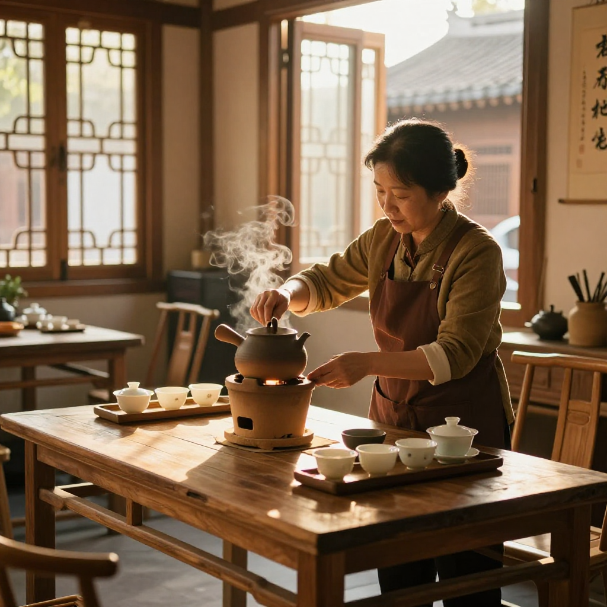
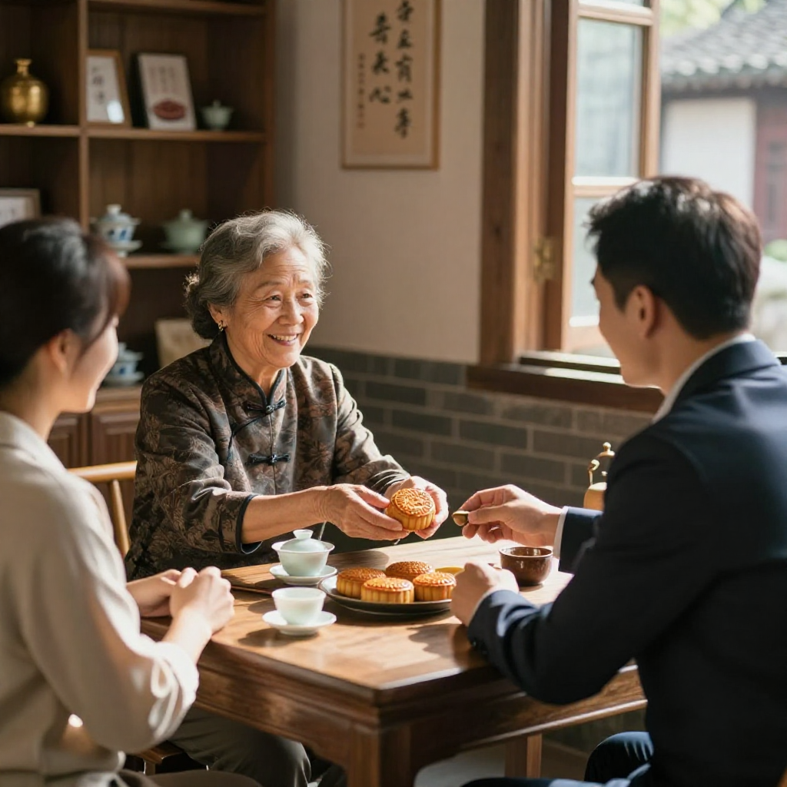
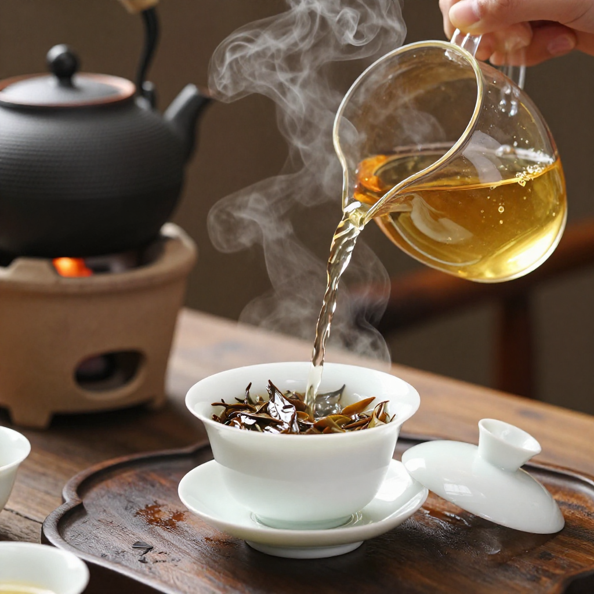
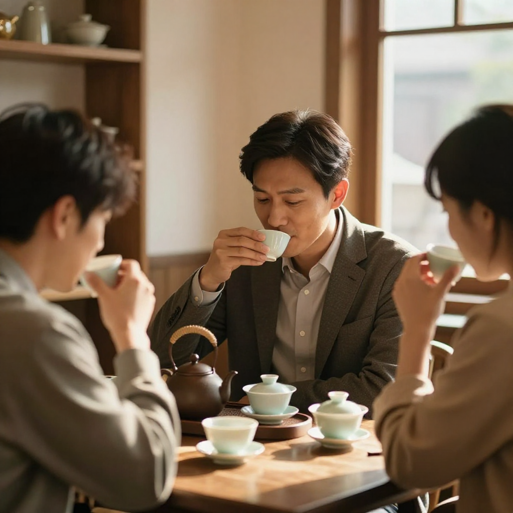

一杯茶，看透人情冷暖 | 阿凤姐的店里每天都在上演社会百态
**时间：** 2026年10月2日，国庆假期第二天
**地点：** 惠州惠城区东湖花园，凤凰茶业店里
国庆的惠州，秋老虎刚退，门口那棵榕树底下还摆着两张塑料凳。下午三点多，店里冷气开得足足的，阿凤姐林玉凤刚把小烤炉点上，门帘一掀——好久不见的陈老板拎着两盒月饼进来了，身后还跟着送货顺路拐进来的刘叔，和抱着账本子来对账的小美。
「哟，稀客啊！」阿凤姐赶紧起身让座，「陈老板，你这大忙人，半年没见了吧？」
陈老板搓搓手，有点不好意思：「凤姐，别笑我了。这半年，难啊。」
第一幕：引茶
阿凤姐啥也没多问，转身就从柜子最里层摸出一罐老丛鸭屎香。这罐是她自己留的口粮，轻易不拿出来。
「今天不谈生意，先喝茶。」她笑着说，「老熟人来了，就得喝这泡。」
小美在旁边小声跟刘叔嘀咕：「凤姐还是这样，谁来都一样招待。上回有个赊了半年账的，她照样给泡好茶。」
第二幕：泡茶

阿凤姐泡茶，手脚利落得好看。盖碗先用开水一烫，热气腾起来，她顺手称了9克茶叶丢进去，放小烤炉上提香，烘了足足5分钟，整个店里全是兰花香。
「看好了啊，」她一边高冲100度的开水一边说，「水柱拉高，让茶叶翻起来，第一泡洗茶不喝，香气都闷在这一下。」
开水一激，鸭屎香那股霸道的花香「砰」一下就炸开了，陈老板忍不住深吸一口气：「还是这个味！外面喝不到。」
第三幕：品茶

第二泡出汤，茶汤倒进玻璃公道杯，清透得跟琥珀似的。刘叔端起杯先看了一眼：「这汤色，正！」
一人一小杯，先闻公道杯，再小口溜进去。陈老板一口下去，眉头都舒开了：「甘！回甘这么长……第四泡是不是更甜？」
「行家啊，」阿凤姐乐了，「好茶的精华就在第四、第五泡，能泡十二三泡呢。你这舌头，还没被外面的便宜茶喝坏。」
小美笑了：「我奶茶店里拿凤姐的蜜兰香做茶底，一杯卖18到22块，客人就认这个香。上个月刚续了二十斤，比用香精的回头客多一截。」
第四幕：点题

说到这，陈老板叹了口气，打开了话匣子。
「凤姐，说出来不怕你笑。2022年我酒楼最旺的时候，一个月从你这拿三十斤蜜兰香当口粮茶。后来有人给我推便宜货，一斤便宜四十块，我就断了你的货。结果呢？客人喝一口就皱眉，回头客掉了三成。」
他顿了顿，声音低了些：「今年生意淡，店面都缩了一半。今天来，我都不好意思开口。」
阿凤姐把第五泡给他满上：「这有啥不好意思的？茶又不记仇。你人来了，茶还热着，这就够了。生意好的时候你是老板，生意淡的时候你是老友，我这杯茶，对谁都一个样。」
刘叔在旁边接了一句：「这话在理！这年头，人走茶凉的地方多了，凤姐这儿是人走茶还热着。」
尾声
一下午，三个人喝透了一泡老丛，从两点喝到五点，喝掉了十三泡。临走，陈老板把月饼往柜台上一放：「凤姐，先给我拿五斤老丛试试水。做酒楼我算明白了，口粮茶不能省，省那点钱，丢的是回头客。」
阿凤姐一边给他打包，一边冲小美眨眨眼：「听见没？这就是一杯茶看人情——得意时别飘，落难时别慌，是真的东西，穿越个三五年，还是真的。」
送到门口，陈老板的电动车后座绑着那五斤茶，迎着晚霞走了。阿凤姐回头把小本子翻开，在陈老板那页轻轻画了个圈。
至于那个圈是啥意思？嘿，下回凤姐亲口告诉你。
FAQ
**Q：在惠州开酒楼，口粮茶怎么选才不亏？**
A：别只看一斤便宜几十块，要算回头客账。像陈老板这样，用正宗凤凰单丛当口粮茶，一斤多花几十，留住一桌回头客就全回来了。建议先拿5斤试水，看客人反馈再放量。
**Q：老丛和普通新茶，喝起来有啥不一样？**
A：新茶香气高扬、冲劲足；老丛是几十年老树，香气沉下来了，入口更甘更滑，耐泡度也更高。招待老熟人、重要客人，用老丛最有面子。
**Q：惠州这么潮湿，茶叶回家咋放？**
A：密封、避光、防潮三件套。散茶拿铝箔袋扎紧，放紫砂罐里，搁阴凉处就行。每年拿出来复烤一次，香气就回来了。
标签
#凤凰单丛 #潮州工夫茶 #惠州茶馆 #鸭屎香 #老丛 #人情冷暖 #社会百态 #惠州喝茶 #茶馆故事
联系方式
📍 惠州市惠城区东湖花园一区沿江商铺89-136（凤凰茶业）
📱 电话/微信：13435567385
💬 QQ：1079790744
🍵 批发零售都接，欢迎来店里坐坐，先喝茶再谈事
下回预告
下回再说说小美那家奶茶店的故事——她咋用凤凰单丛做茶底，一杯多卖6块钱还被小红书排队打卡的，敬请期待。